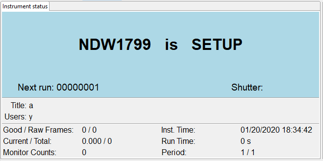
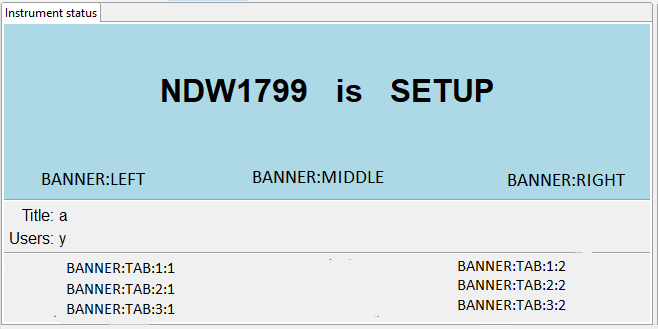

Dashboard
The IBEX dashboard provides a summary of the status of the instrument; in particular the DAE.

Customization
The data displayed in the dashboard can be customized by modifying the database in:
C:\instrument\settings\config\<machine name>\configurations\dashboard.db
This is loaded by the INSTETC IOC.
There are two example files for neutron and muon instruments in the following location. By default, the neutron one will be copied in by the upgrade script. On a muon instrument, you will need to (manually) copy in the muon-specific DB.
C:\Instrument\Apps\EPICS\misc\upgrade\master\data\dashboard.db
C:\Instrument\Apps\EPICS\misc\upgrade\master\data\dashboard_muon.db
The dashboards points at PVs prefixed with %MYPVPREFIX:CS:DASHBOARD: and postfixed with either VALUE or LABEL to get the values of the value or label respectively. The data type of these PVs must be strings, and they must therefore be less than 40 characters long. To be visible in the web dashboard, they must additionally be archived using info(archive, "VAL").
Examples:
caget %MYPVPREFIX%CS:DASHBOARD:BANNER:LEFT:LABEL
caget %MYPVPREFIX%CS:DASHBOARD:TAB:2:2:VALUE
The following picture shows the location of each customisable dashboard PV (each one includes both a value and a label).
